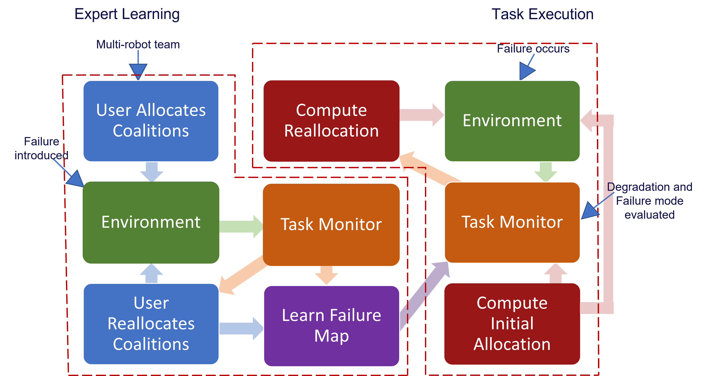
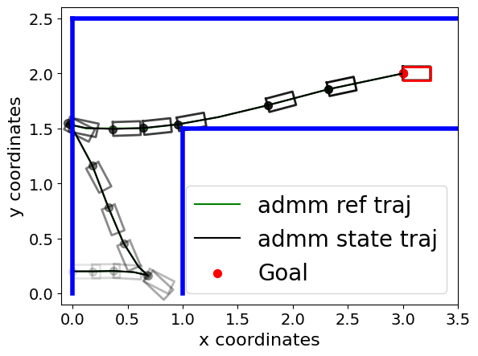
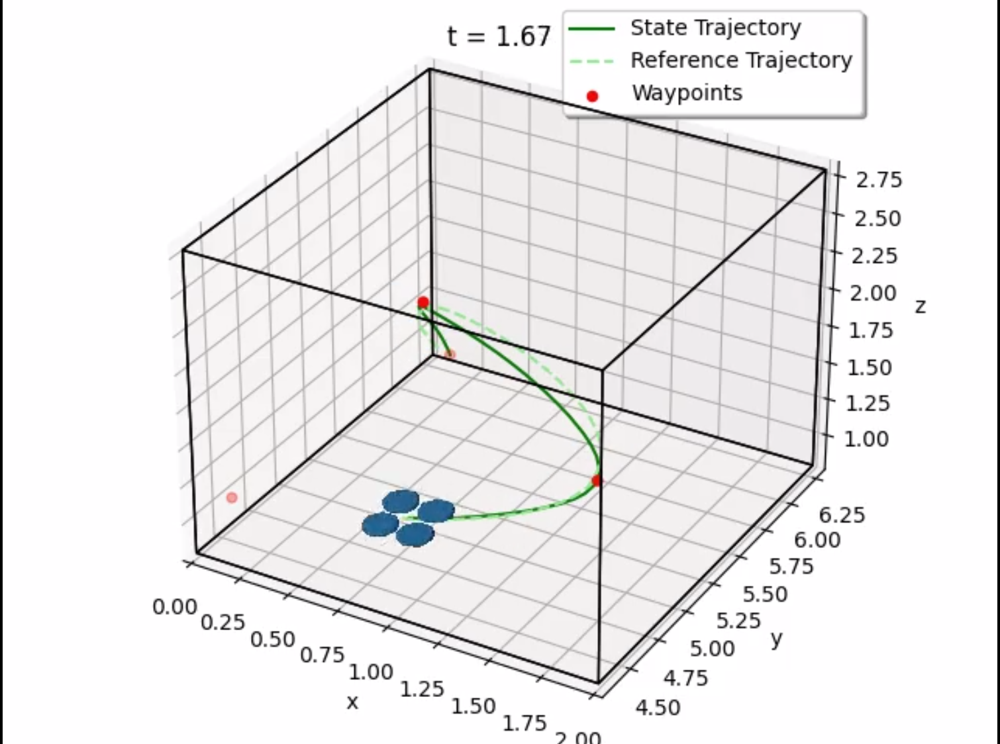

|
Anusha Srikanthan I'm a 5th year PhD candidate at the GRASP Lab, University of Pennsylvania in Philly, where I'm jointly advised by Nikolai Matni, an expert mathematician and Vijay Kumar, an expert roboticist. I'm motivated by problems that require rigorous mathematical guarantees while being practically useful for robot applications. My previous research was on the topic of guaranteeing dynamic feasibility in trajectory optimization for nonlinear systems via optimization theory, with applications to under-actuated robots. I've received the Excellent Paper Award for my Workshop paper on Resilient Task Allocation for Heterogeneous Robots at IROS 2021. |

|
Research Publications
I'm interested in the problem of safety in robotics using layered control, optimization theory, and machine learning. Most of my research is about discovering mathematical principles governing the design of decision-making hierarchies in task planning, trajectory design, and feedback control. Some papers are highlighted below.
To tackle the combined challenges of state and input constraint satisfaction, dynamic feasibility, safety, and real-time computation, we present a layered control architecture (LCA) consisting of an offline path library generation layer, and an online path selection and safety layer.
This paper proposes a suboptimal MPC scheme based on the alternating direction method of multipliers (ADMM). We show that using a warm-start approach combined with enough iterations per time-step, yields an ADMM-based suboptimal MPC scheme which asymptotically stabilizes the system and maintains recursive feasibility.

Motivated by the lack of existing methods to account for controller cost in trajectory planning for robotic systems, we propose a principle derivation to decompose a nonlinear optimal control problem into trajectory generation and feedback control layers.
Task allocation in multi-robot teams is often hindered by unknown task reward functions. This work introduces the COCOA problem, addressed by a continuous-armed bandit algorithm, which uses online optimization to form coalitions that maximize unknown task rewards while respecting resource constraints in real time.
This work proposes a two-part framework that infers heterogeneous strategies from expert demonstrations and adaptively selects the best strategy for coalition formation based on a team's capabilities. Through numerical simulations, StarCraft II battles, and multi-robot emergency-response tasks, the framework outperforms existing approaches in requirement satisfaction, resource utilization, and task success rates.
This thesis contributes two frameworks to learn implicit task requirements directly from expert demonstrations of coalition formation.
Workshop and Arxiv Papers
|
QuadLCD: Layered Decomposition Enables Actuator Feasibility
Anusha Srikanthan ICRA 2025 Workshop on 25 Years of Aerial Robotics Oral Spotlight arXiv We present a layered control architecture that decomposes the quadrotor control problem into planning and feedback control layers, enabling guaranteed actuator feasibility through systematic decomposition theory. |
|
|

|
Resilient Task Allocation for Heterogeneous Robots
Anusha Srikanthan, Siddharth Mayya, Harish Ravichandar, Vijay Kumar IROS 2021 Workshop, Excellent Paper Award This paper proposes a resilient task allocation framework for heterogeneous robot teams operating in dynamic environments. Our approach enables robots to adapt to failures and disturbances, improving task success rates. This work was awarded the Excellent Paper Award at the IROS 2021 Workshop. |
|

|
Augmented Lagrangian Methods as Layered Control Architectures
Anusha Srikanthan, Vijay Kumar, Nikolai Matni arXiv preprint arXiv We propose the use of alternating direction method of multipliers algorithm (ADMM) on nonlinear optimal control problems to derive a layered control architecture. |
|

|
Why Change Your Controller When You Can Change Your Planner: Drag-Aware Trajectory Generation for Quadrotor Systems
Hanli Zhang*, Anusha Srikanthan*, Spencer Folk, Vijay Kumar, Nikolai Matni arXiv preprint arXiv |
Industry Experience
- Worked with a hardware and controls research group developing a new platform for high-performance humanoid robots equipped with actuators achieving close to 40 mph throws of a baseball. (video)
- Currently writing a paper solving a fundamental challenge of impact-aware safety for the platform.
- Identified challenges in data collection and training of machine learning models for offline evaluation of self-driving policies.
- Developed a principled approach to design loss functions and benchmarked against existing implementations. Project report
- Designed and implemented a Safety Duplication Plugin for multiple error detection using concepts of redundancy and clock domains, integrated on Perforce using Perl scripts with Viva embedded code programmed on a UNIX-based OS.
- Project report
Software Projects
🏢 Building Damage Assessment
Machine LearningDeveloped a deep learning model using VGG16 architecture to automatically assess and classify building damage from aerial imagery. Applied convolutional neural networks for feature extraction and damage severity classification.
👁️ IRIS: Assistive Technology for the Blind
Computer VisionA comprehensive software system combining computer vision and OCR to assist visually impaired individuals with daily tasks. Integrated Raspberry Pi 3 with OpenCV and Tesseract OCR engine for real-time text recognition and environmental understanding.
🎮 Snake Game in C++
Game DevelopmentA classic snake game implementation created for a high school programming class. Demonstrates fundamental game development concepts including game loops, collision detection, and graphics rendering. Best played with Turbo C++ compiler.
Invited Seminars and Workshop Talks
|
January 2026: Presented a poster and attended networking sessions with academic and industry leaders at the Gordon Research Conference, Ventura, CA, USA
November 2025: Presented a seminar talk titled "A Layered Control Architecture for Reliable Agility" at the Robotics Seminar Series, University of Delaware October 2025: Presented on "Egocentric Safety via CBFs for Agile Manipulation" at the Research Internship Presentation, Robotics and AI Institute May 2025: Oral Spotlight - Presented a 5-minute talk on "QuadLCD: Layered Decomposition Enables Actuator Feasibility" at the ICRA 2025 Workshop on 25 Years of Aerial Robotics, Atlanta, GA, USA March 2025: Attended the 2025 Grad Cohort For Women Workshop by Computing Research Association, Denver, CO, USA. Attended sessions tailored for student career development and received a travel grant from CRA funding the entire travel, stay, and registration. January 2025: Poster Session and Networking at the NSF Workshop on Reinforcement Learning, Harvard University. Presented poster titled "A Data-Driven Approach to Synthesizing Dynamics-Aware Trajectories for Underactuated Robotic Systems" December 2024: Invited talk at Dr. Siddhartha Srinivasa's robotics research group, University of Washington. Presented "Layered Control Decompositions enable Safe Navigation of Underactuated Robots" November 2024: Poster Session and Networking at the Symposium on Safe Deployment of Foundation Models, Princeton June 2024: Poster Session and Networking at the Workshop on Optimization, Learning, and Control, Princeton March 2024: Invited research seminar on "Layered Control Architectures for Underactuated Robotic Systems" by Dr. Lekan Molu at Microsoft Research, NYC October 2023: Invited talk on "Data-driven Synthesis of Dynamics-Aware Trajectory Generation" by Dr. Asif Rana (currently at Amazon Robotics), Thirdwave Innovation August 2023: Invited talk on "Data-driven Synthesis of Dynamics-Aware Trajectory Generation" at Dr. John Doyle's group, Caltech |
Teaching and Mentorship
📜 Teaching Certificate
Professional DevelopmentCenter for Excellence in Teaching, Learning and Innovation
- Attended five workshops on effective lecturing, office hours, and assessments
- Teaching fellow observation and feedback on lecture delivery
- Teaching philosophy workshop with teaching statement presentation
👥 Undergraduate Mentor
MentoringQuadrotor Swarm Control using Reinforcement Learning
- Mentoring Divya Karnani in reinforcement learning fundamentals
- Guiding policy optimization and hands-on implementation
- Working with Python, GitHub workflows, and RL libraries (Stable Baselines)
🎓 Guest Lecturer
LecturingMEAM 620: Learning for Adaptive and Reactive Control of Robots
- Presented research topics through bottom-up approach connecting theory to practice
- Lectures spanning decomposition theory for linear systems to nonlinear extensions
- Course instructor: Dr. Nadia Figueroa
👥 MS Student Mentor
MentoringDrag-Aware Quadrotor Trajectory Generation
- Mentored Hanli Zhang on her first research project
- Developed drag-aware planning algorithms using data-driven methods
- Leveraged trajectory tracking errors as proxy for model mismatch
📚 Head Teaching Assistant
TeachingESE 2040: Decision Models (Undergraduate)
- Supervised by Dr. Nikolai Matni covering linear algebra and optimization
- Weekly office hours, homework design, grading, and recitations
- Head TA responsibilities coordinating instructional team
📚 Teaching Assistant
TeachingCIS 419/519: Applied Machine Learning (Undergrad/Grad)
- Served as TA for 100+ students on massive instructional team
- Led recitations, weekly office hours, grading, and student project advising
📚 Teaching Assistant
TeachingESE 530: Elements of Probability Theory (Graduate)
- Part of instructional staff with Dr. Santhosh Venkatesh
- Course served as qualifier for doctoral students
- Two office hours per week, monthly recitations, grading
- Helped develop online course on foundations of machine learning
💻 Instructor
InstructionAI and Python Programming for High School
- Part-time instructor of Python and Artificial Intelligence
- Project-based learning approach with hands-on implementation